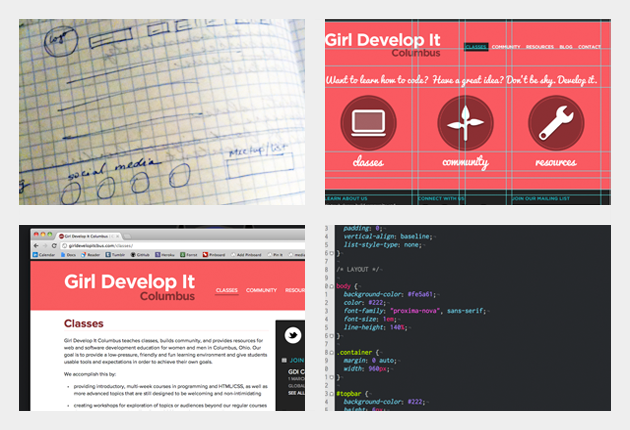

Building A New Website : Part One
By Jen Myers | 27 Feb 2012 | Tagged: web development
Even as the organizer of Girl Develop It Columbus and a teacher of our HTML/CSS classes, I have a lot to learn. I try to make each of my external projects an opportunity to explore something new and pick up some new skills. So, when it came time to design a new version of the GDIC website, I decided to stretch myself and try some tools I’ve never used before.
The previous versions of the website were powered by a content management system called Textpattern, which I’ve used for a number of years. It’s similar to WordPress, although I think it has much more flexibility for those who want to customize it. However, it also seemed a little robust for our needs here. I wanted to move away from a database-driven CMS and to a more straightforward static site generator.
What’s the difference between the two? A database-driven system stores its data in a database separate from the HTML of the website itself. As you change content in the database, it will be dynamically updated in the website. By contrast, a static site generator is a program that takes your site content and layouts and creates an output of static (unchanging) HTML pages. To update the content, you don’t use a web browser interface, but you type directly in your text editor and run a command that will automatically re-output the site pages with your new content.
If this sounds a little confusing to you, don’t worry. WordPress and similar database-driven systems are the norm now, so switching to a different format takes a little time to wrap your head around. Basically, using a static site generator to create a website is very much like what we used to do before database-driven websites, and to many people, including me, the minimalist setup, the lower server loads and powerful flexibility make them the more attractive choice. If you want to explore why more people, especially programmers, are choosing to use static site generators, here are a couple of links to start with:
It is true that static site generators are mostly used by programmers, and they have a steep learning curve for those without a bit of a programming under their belts. But if you’re starting out on that path, this is also a great way to challenge yourself and test your skills.
For this website, I chose to use Jekyll, a well-known static site generator written in the programming language Ruby. I had worked with this in sites built by others, but I had never designed, built and deployed my own from scratch before.
Of course, choosing the platform was only the preliminary step. I then went through the whole process of making the new website, including wireframes, Photoshop mockups, HTML/CSS development, integrating the design with Jekyll and, finally, deploying it on Github Pages. Over the next few posts, I’ll discuss each step in detail and reveal how we got from concept to the live site you see now.
Comments →
Hello World
By Jen Myers | 12 Feb 2012 | Tagged: admin
It’s been a little quiet on the GDIC front lately. But we’re back with a new website, a new blog, new classes and new plans for workshops, speakers and initiatives. Take a look around and check back very soon for details on what we’re up to.